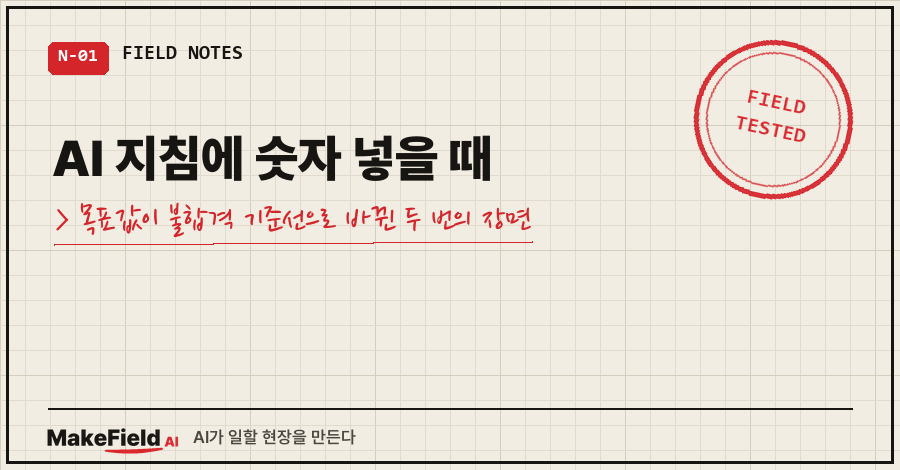
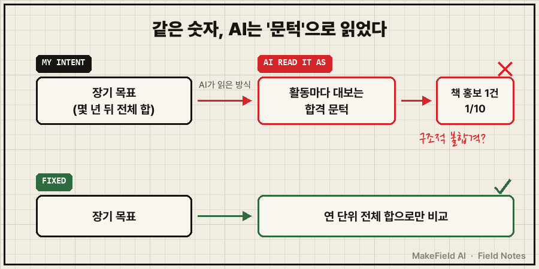
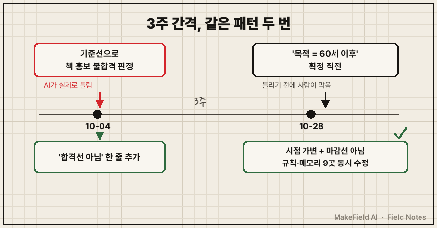
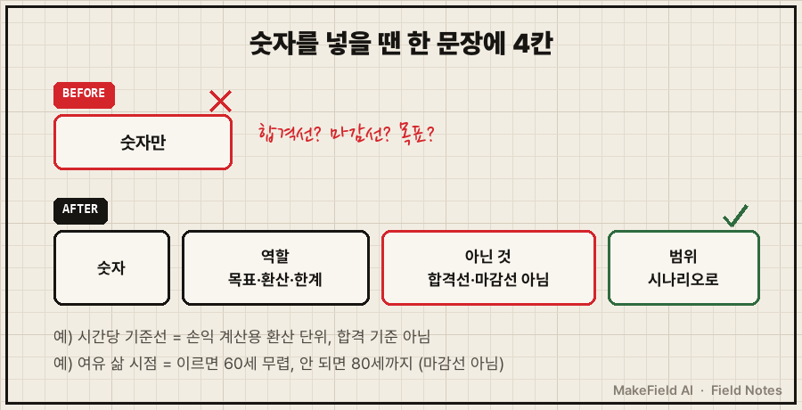

AI한테 제 목표를 알려 주면 판단을 더 잘 도와줄 줄 알았어요.
그런데 제가 적어 준 숫자 하나가, 그 뒤로 모든 일을 채점하는 합격선이 돼 있더라고요.
결론부터 적을게요. AI 지침에 숫자를 넣을 때는 숫자만 적지 말고, 그 숫자의 역할(목표인지, 환산 단위인지)과 '무엇이 아닌지'(합격선 아님, 마감선 아님)를 같은 문장에 붙여야 합니다. 그렇게 안 하면 AI는 그 숫자를 넘느냐 못 넘느냐로 판정해 버려요. 저는 이걸 3주 간격으로 두 번 겪었습니다. (2026년 10월 4일, 10월 28일)
제 본업은 장비를 돌리는 쪽이에요. 현장에선 "운전 목표값"과 "넘으면 설비를 세우는 정지값"을 따로 적는 게 기본이죠. 같은 숫자라도 어느 칸에 들어가느냐에 따라 의미가 정반대니까요.
퇴근 뒤엔 AI 비서 하나를 몇 달째 길들이고 있는데, 정작 거기에 숫자를 넣을 땐 그 구분을 안 했던 거예요..
1. 첫 책 홍보가 "구조적 불합격"이 된 날
첫 책을 내고 홍보 전략을 AI랑 짜던 10월 4일이었어요.
저는 예전에 AI에게 "시간당 이 정도는 벌어야 한다"는 기준선을 하나 알려 둔 상태였습니다. 여러 권의 책, 강의까지 합쳐서 몇 년 뒤에 닿고 싶은 장기 목표였어요.
AI의 진단은 이랬어요.
홍보 1시간에 1권이면 기준선 1/10, 구조적 불합격
→ 책 = 명함계산은 맞았어요. 홍보에 들인 1시간을 책 1권 인세로 나누면 기준선에 한참 못 미치죠.
문제는 그 기준선이 활동 하나하나를 거르는 문턱으로 쓰였다는 거예요. 저는 그렇게 쓰라고 한 적이 없거든요.
그래서 이렇게 받아쳤습니다. 원문 그대로예요.
"티끌모아 태산이다. 책은 써놓으면 그냥 자동으로 팔린다… 2권 3권, 강의 수입까지 미래를 고려했을 때 시간당 [기준선]을 위해 이것저것 미리 준비하고 시행착오를 겪어봐야 하지 않겠는가?"
AI는 바로 정정했어요. 기준선은 책 여러 권과 강의를 합친 연 단위 전체 합으로만 보고, 지금 홍보는 판매 엔진을 깔아 보는 수업료로 본다고요.
그리고 지침에 한 줄이 붙었습니다. "개별 활동의 시간당 합격선으로 쓰지 말 것."

2. 3주 뒤, 이번엔 AI가 틀리기 전에 막았어요
10월 28일엔 AI 비서의 큰 규칙을 다시 정하는 자리가 있었어요. "무엇을 위해 돈을 버는가, 언제까지 볼 건가" 같은 얘기였죠.
여기서도 한 번 부딪혔어요. AI가 내놓은 수정안은 "지속성 우선, 결과 목표 금지"였거든요. 여러 변수를 한 방향으로 접어 버린 거예요. 제 답은 이랬습니다.
"가중치를 둬야 한다는 것임. 단일 방향으로 무조건적으로 밀어붙이는건 현대사회에 통용이 안되는 것임. 변수가 많다는 것임"
그렇게 정리해 가다가, "목적 = 60세 이후 여유 있는 삶"이라는 문장으로 확정하려던 순간이었어요. 이번엔 제가 먼저 막았습니다.
"이걸 규칙으로 넣어버리면 넌 또 60세까지만 생각할 것이다. 뒤에 수식어를 더 붙여야한다. 다만 60세까지 안된다면 80세까지 고려는 해야하므로 가변적으로 생각해야한다는 말을 덧붙여놔야 문제가 없지않을까?"
솔직히 적으면, 이 장면에선 AI가 실제로 틀린 게 아니에요. 틀릴 게 뻔해 보여서 제가 미리 손을 쓴 거죠. 3주 전에 기준선이 문턱이 되는 걸 이미 한 번 봤으니까요.
문장은 이렇게 바뀌었어요.
[전] 목적 = 60세 이후 여유 삶
[후] 돈에 쫓기지 않는 여유 삶 (시점 가변: 이르면 60세 무렵,
안 되면 80세까지 고려 — 60세를 마감선·계산 기준으로
박지 말 것)같은 문장이 들어 있던 규칙·메모리 9곳을 같이 고쳤어요. 한 군데만 고치면 나머지 8곳의 옛 문장이 계속 읽히니까요.
이 규칙 재정비가 어떻게 시작됐는지, 규칙이 누구 말인지부터 따졌던 얘기는 AI 비서가 제안을 못 할 때, 규칙 414줄 중 165줄은 제 말이 아니었어요에 적어 뒀어요.
여러분 AI의 커스텀 지침에도 "월 얼마", "몇 살까지", "하루 몇 시간" 같은 숫자가 하나쯤 들어 있지 않나요?

3. 왜 AI는 숫자를 문턱으로 읽을까요?
이날 정리한 진단은 한 줄이었어요. 정할 수 없는 것을 한 점으로 박아 둔 거짓 정밀도. "언제까지", "시간당 얼마"는 원래 범위로만 말할 수 있는데, 규칙엔 숫자 하나로 들어가 있었던 거죠.
제 추측이지만, 역할이 안 적힌 숫자는 AI가 판단에 쓰기 제일 쉬운 방식, 그러니까 "넘느냐 못 넘느냐"로 쓰는 것 같아요.
공식 문서도 비슷한 얘기를 해요. Claude 프롬프트 작성 가이드에 "Providing context or motivation behind your instructions, such as explaining to Claude why such behavior is important, can give Claude more information about your goals and help it deliver more targeted responses." 라는 문장이 있어요. 지시만 주지 말고 왜 그런지까지 주라는 거죠. 그리고 이유를 붙인 예시 뒤에 "Claude can generalize from the explanation.", 설명을 주면 Claude가 그걸 일반화한다고 적혀 있습니다. (platform.claude.com 프롬프트 작성 모범 사례, 2026-11-01 확인)
거꾸로 보면, 이유 없이 숫자만 줬을 때 AI가 일반화할 수 있는 건 숫자 그 자체뿐이에요. 제가 겪은 게 딱 그거였고요.
4. 숫자를 빼는 대신, 숫자의 '역할'을 적었어요
떠올릴 수 있는 방법을 나란히 놓으면 이랬어요.
| 방법 | 이번에 본 결과 |
|---|---|
| 숫자를 지침에서 아예 뺀다 | 안 했어요. 시간을 들일지 말지 손익을 따질 땐 환산 단위가 필요하거든요 |
| 숫자를 그대로 둔다 | 10월 4일처럼 활동 하나하나가 그 숫자로 채점됨 |
| 금지 규칙을 한 줄 얹는다 | 10월 4일에 한 방법. 그런데 같은 숫자가 다른 메모리엔 '목적 후보'로 그대로 남아 있었고, 10월 28일에야 그 지위를 내렸어요 |
| 숫자 + 역할 + 아닌 것 + 범위를 한 문장에 | 채택. 지금은 기준선이 '손익 계산할 때 쓰는 환산 단위, 합격 기준 아님'으로 적혀 있어요 |
AI 지침에 숫자 넣을 때 제가 이제 확인하는 것들이에요.
- [ ] 이 숫자는 목표값인가, 환산 단위인가, 넘으면 멈추는 한계값인가 — 셋 중 하나를 적었다
- [ ] "합격선 아님", "마감선 아님"처럼 이 숫자가 아닌 것을 한 줄 붙였다
- [ ] 한 점 대신 범위나 시나리오로 쓸 수 있는 숫자인지 따져 봤다
- [ ] 같은 숫자가 들어 있는 다른 지침·메모리를 찾아 같이 고쳤다

자주 묻는 질문
Q. 챗GPT나 클로드 커스텀 지침에 목표 금액을 적어도 되나요?
적어도 돼요. 다만 "이 금액은 몇 년 뒤 전체 합 기준이고, 개별 일을 거르는 기준이 아니다"처럼 역할을 같이 적는 걸 권해요. 저는 그 한 줄이 없어서 첫 책 홍보가 불합격 판정을 받았어요.
Q. 이미 숫자가 문턱처럼 쓰이고 있는지 어떻게 알아채나요?
AI 답에 "기준선의 몇 분의 1", "미달", "불합격" 같은 말이 내가 묻지 않은 자리에서 나오면 의심해 보세요. 저는 "1/10, 구조적 불합격"이라는 말을 보고 반박했고, 그 자리에서 지침에 한 줄이 붙었어요.
Q. 범위로 적으면 AI가 오히려 판단을 못 하지 않나요?
고친 지 며칠 안 돼서 효과를 숫자로 말하긴 아직 일러요. 대신 규칙 원문에 "여러 시점 시나리오로 본다"를 같이 적어서, AI가 한 시점 하나로만 계산하지 않게 했어요. 범위가 판단을 흐리는지는 지켜보는 중입니다.
AI는 제가 준 숫자를 성실하게 지켰을 뿐이에요. 그 숫자가 목표인지 정지값인지 적어 주는 일은 결국 사람 몫이었습니다.
AI에게 일을 맡기며 지침을 고쳐 온 과정은 makefield.ai에 한 묶음으로 정리해 가는 중입니다.
태그: #AI지침에숫자넣을때 #AI커스텀지침 #커스텀지침작성법 #AI규칙파일 #AI지침작성 #챗GPT커스텀지침 #클로드지침 #프롬프트작성법 #AI프롬프트 #AI판단오류 #AI비서 #AI에이전트 #직장인AI #AI오답노트 #MakeFieldAI